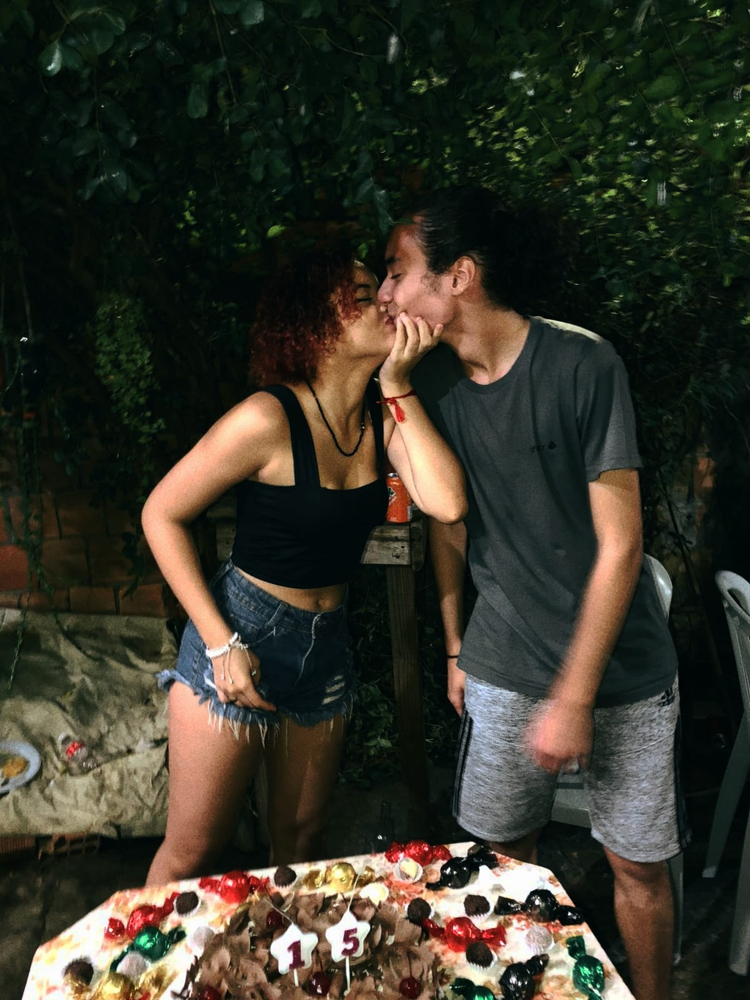
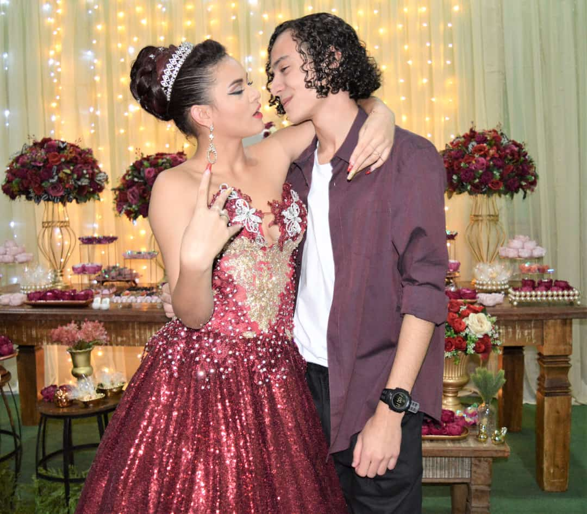

Primeiro Beijo Na Frente Da Familia
Fernanda, eu nunca conheci alguém tão incrivel como você você é a garota que sempre me faz sorrir, sempre me deixa feliz independente do momento, eu amo ter você do meu lado sempre me apoiando, eu amo beijar sua boca e sentir o gosto do seu beijo, quando eu te vi pela primeira vez naquele onibus eu nunca pensei que eu iria conhecer uma garota tão perfeitinha, a garota que me faz ficar bem em todo momento, em cada abraço seu eu me sinto mais em casa, em cada beijo eu me sinto mais em paz. Eu amo ir na sua casa, amo sua familia, adoro o jeito q eles me tratam AaAaAa eu te amo.
